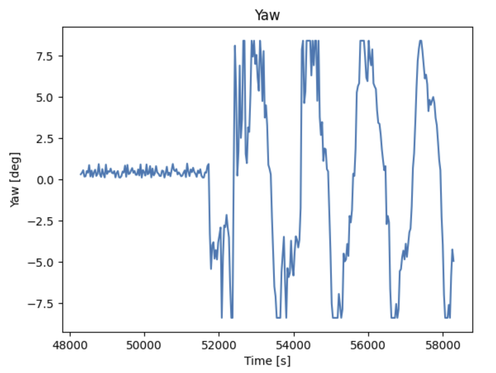

Lab 2 IMU
The purpose of this lab was to test the IMU sensor. The IMU has an accelerometer, gyroscope, and magnetometer, but we primarily focused on tuning and fusing the first two. We also recieved our actual robots in this lab and took them for a spin.
Prelab
To start the lab, I just directly connected my IMU to the Artemis, and ran example code. Since the ADR jumper was not closed, I needed to set ADO-0 equal to 1. The serial plotter was helpful in visualizing the data.
After this, I also added in code to have the LED on the Artemis blink once the gyroscope had been initialized. This was included within the void setup() function on the Arduino side.
while (!initialized)
{
myICM.begin(WIRE_PORT, AD0_VAL);
SERIAL_PORT.print(F("Initialization of the sensor returned: "));
SERIAL_PORT.println(myICM.statusString());
if (myICM.status != ICM_20948_Stat_Ok)
{
SERIAL_PORT.println("Trying again...");
delay(500);
}
else
{
initialized = true;
}
}
//Blink upon starting
pinMode(LED_BUILTIN, OUTPUT);
digitalWrite(LED_BUILTIN, HIGH); // turn the LED on (HIGH is the voltage level)
delay(500); // wait for a second
digitalWrite(LED_BUILTIN, LOW); // turn the LED off by making the voltage LOW
delay(500);
digitalWrite(LED_BUILTIN, HIGH); // turn the LED on (HIGH is the voltage level)
delay(500); // wait for a second
digitalWrite(LED_BUILTIN, LOW); // turn the LED off by making the voltage LOW
delay(500);
digitalWrite(LED_BUILTIN, HIGH); // turn the LED on (HIGH is the voltage level)
delay(500); // wait for a second
digitalWrite(LED_BUILTIN, LOW); // turn the LED off by making the voltage LOW
delay(500);
Accelerometer
As the accelerometer measures translation in X,Y, and Z, I needed to use geometric principles in order to convert this data into rotations, namely pitch and roll. Those equations translated into the following code, using the atan2 function in order to allow for the correct output range of values. I then also converted from radians to degrees.
//Convert to pitch data (pitch = theta = y rotation)
//Return a float in degrees
float raw_to_pitch_deg(ICM_20948_I2C *sensor){
return atan2(sensor->accX() , sensor->accZ()) * (180/M_PI);
}
//Convert to pitch data (roll = phi = x rotation)
//Return a float in degrees
float raw_to_roll_deg(ICM_20948_I2C *sensor){
return atan2(sensor->accY() , sensor->accZ()) * (180/M_PI);
}
Note that the sensor measurements are actually taken via an anonymous function!
I verified that measurements reflected when the accelerometer was held at 90 degrees roll and pitch, as shown in the videos below.
FFT and Low Pass Filter
I noticed that, regardless of whether the accelerometer was moving or staying still, the data was rather noisy. I knew that once the accelerometer was on the car, data would become even noisier, so I decided to add a low pass filter. The first step in creating this filter was doing a Fourier Transform in order to select a cutoff frequency. I did this on the python end using the numpy, scipy, and matplotlib packages. The images below show FFTs in the moving and static cases
Based on the fourier transform, it seemed that most significant data points/spikes were contained within 1-5 Hz. Thus, 5 Hz became my cutoff frequency. I also determined that over ~10 seconds of sampling data, I usually collected at a rate of 262 messages/s. All of these values were used to determine my alpha value for the LPF, where dt = 1/(sampling rate), RC = 1/(2*pi*cutoff freq), and alpha=dt/(dt+RC). I used an alpha value of approximately 0.11.
I applied the LPF using the following code, based on lecture:
const float alpha = 0.11;
accel_pitch_lpf[0] = accel_pitch_raw[0];
accel_roll_lpf[0] = accel_roll_raw[0];
for(int n = 1; n < data_array_size; n++){
float pitch_raw_curr = accel_pitch_raw[n];
float roll_raw_curr = accel_roll_raw[n];
accel_pitch_lpf[n] = alpha * pitch_raw_curr + (1 - alpha) * accel_pitch_lpf[n - 1];
accel_pitch_lpf[n - 1] = accel_pitch_lpf[n];
accel_roll_lpf[n] = alpha * roll_raw_curr + (1 - alpha) * accel_roll_lpf[n - 1];
accel_roll_lpf[n - 1] = accel_roll_lpf[n];
}
The results of which are shown below. I saw a significant reduction of noise while using a low pass filter!

Gyroscope
Similar to the accelerometer, I had to convert the gyroscope data, measured in rad/s, to usable measurements in degrees. I did so using the following code:
dt = (millis()-lastT)/1000.;
lastT = millis();
gyro_pitch_raw[i] = gyro_pitch_raw[i] + myICM.gyrY()*dt;
gyro_roll_raw[i] = gyro_roll_raw[i] + myICM.gyrX()*dt;
gyro_yaw_raw[i] = gyro_yaw_raw[i] + myICM.gyrZ()*dt;

Complementary Filter
When measuring the gyroscope data, I noticed it had a tendency to drift, in particular over long periods of data collection. It was less accurate than the accelerometer, but also less noisy. This prompted me to create a complementary filter which fused the two. I ended up weighting the gyroscope 90% and the accelerometer 10%; experimentally, this is when I got the most reliable results. It was mostly reliable within the -90 to 90 range, though, as outside of this range the accelerometer would behave less predictably. No filter was applied to yaw, because the accelerometer cannot measure it. This is ironic, since we will mostly use yaw for future applications. The result of my complementary filter can be seen below. The top photo shows pitch, while the bottom photo shows roll.

Sampling Data
In order to make my data collection as fast as possible, I removed a few deliberate buffers and debugging points within my code. This included Serial.println() lines of code between certain steps of the data collection and bluetooth portions of the code that I originally used to make sure everything was working. I also stored all data in arrays. The full function can be seen below:
case SEND_GYRO_DATA:
{
clear();
int i = 0;
float startT = millis();
float lastT = startT;
float dt = 0;
gyro_pitch_raw[0] = 0;
gyro_roll_raw[0] = 0;
gyro_yaw_raw[0] = 0;
//Build the Array
while ((millis() - startT < 10000) && (i < data_array_size)) {
if (!myICM.dataReady())
continue;
myICM.getAGMT();
dt = (millis()-lastT)/1000.;
lastT = millis();
gyro_pitch_raw[i] = gyro_pitch_raw[i] + myICM.gyrY()*dt;
gyro_roll_raw[i] = gyro_roll_raw[i] + myICM.gyrX()*dt;
gyro_yaw_raw[i] = gyro_yaw_raw[i] + myICM.gyrZ()*dt;
accel_pitch_raw[i] = raw_to_pitch_deg(&myICM);
accel_roll_raw[i] = raw_to_roll_deg(&myICM);
time_data[i] = millis();// - startT;
Serial.println(gyro_pitch_raw[i]);
//Add a buffer
delay(BUFFER);
i++;
}
//Add a comp filter (also LPF on accelerometer)
const float alpha = 0.11;
accel_pitch_lpf[0] = accel_pitch_raw[0];
accel_roll_lpf[0] = accel_roll_raw[0];
for(int n = 1; n < data_array_size; n++){
float pitch_raw_curr = accel_pitch_raw[n];
float roll_raw_curr = accel_roll_raw[n];
accel_pitch_lpf[n] = alpha * pitch_raw_curr + (1 - alpha) * accel_pitch_lpf[n - 1];
accel_pitch_lpf[n - 1] = accel_pitch_lpf[n];
accel_roll_lpf[n] = alpha * roll_raw_curr + (1 - alpha) * accel_roll_lpf[n - 1];
accel_roll_lpf[n - 1] = accel_roll_lpf[n];
//Complimentary Filter
pitch_comp[n] = (pitch_comp[n] - myICM.gyrY()*dt)*0.9 + accel_pitch_lpf[n]*0.1;
roll_comp[n] = (pitch_comp[n] - myICM.gyrZ()*dt)*0.9 + accel_roll_lpf[n]*0.1;
}
//Send the Data Back
for (int j = 0; j < data_array_size; j++) {
if(accel_pitch_raw[j] == 0 || accel_roll_raw[j] == 0.0 || time_data[j] == 0.0)
break;
tx_estring_value.clear();
tx_estring_value.append("Fused:");
tx_estring_value.append(" | ");
tx_estring_value.append(accel_pitch_raw[j]);
tx_estring_value.append(" | ");
tx_estring_value.append(accel_pitch_lpf[j]);
tx_estring_value.append(" | ");
tx_estring_value.append(accel_roll_raw[j]);
tx_estring_value.append(" | ");
tx_estring_value.append(accel_roll_lpf[j]);
tx_estring_value.append(" | ");
tx_estring_value.append(gyro_pitch_raw[j]);
tx_estring_value.append(" | ");
tx_estring_value.append(gyro_roll_raw[j]);
tx_estring_value.append(" | ");
tx_estring_value.append(gyro_yaw_raw[j]);
tx_estring_value.append(" | ");
tx_estring_value.append(pitch_comp[j]);
tx_estring_value.append(" | ");
tx_estring_value.append(roll_comp[j]);
tx_estring_value.append(" | ");
tx_estring_value.append(time_data[j]);
tx_characteristic_string.writeValue(tx_estring_value.c_str());
}
break;
}
The purpose of the clear() function is to clear out all of the data arrays each time the command is called.
A similar function does the exact same on the python side. This is because I experienced a lot of trouble with
calling commands multiple times- if the data set wasn't the exact same size every time, then old data points would be
tacked on to the end of a new dataset, which messed with my plots and filters quite a bit (while also making time seem nonlinear!).
I eventually realized that this is because my arrays were never getting reset on each side, and added that into the code.
Admittedly, this may slow things down since it involves looping over all elements of the array.
Despite this, I can reliably send data for 5-10 seconds at a time, or even more. This is shown in the video and photos below.
Stunts!
We also recieved the namesake Fast Robot during this lab! I charged up the battery and drove it around a bit to get a feel for things. Next, we will start soldering our own boards to the robot and make it autonomous. I noticed that very quick changes in direction could cause the robot to flip.
Discussion
Ultimately, this lab taught me a lot about code efficiency. I spent a long time trying to make my code robust and fix small but crucial mistakes related to writing over old data. It also emphasized accuracy and precision- the accelerometer was pretty accurate (in comparison to the gyroscope) but had more noise and was thus less precise. I learned how filters can be used to combat this, which will help me in the future.